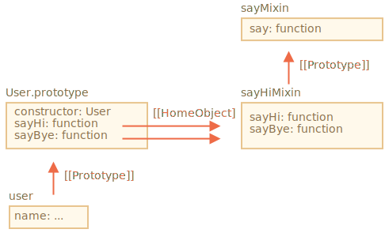

在 JavaScript 中，我们只能继承单个对象。每个对象只能有一个 [[Prototype]]。并且每个类只可以扩展另外一个类。
但是有些时候这种设定（译注：单继承）会让人感到受限制。例如，我有一个 StreetSweeper 类和一个 Bicycle 类，现在想要一个它们的 mixin：StreetSweepingBicycle 类。
或者，我们有一个 User 类和一个 EventEmitter 类来实现事件生成（event generation），并且我们想将 EventEmitter 的功能添加到 User 中，以便我们的用户可以触发事件（emit event）。
有一个概念可以帮助我们，叫做 "mixins"。
根据维基百科的定义，mixin 是一个包含可被其他类使用而无需继承的方法的类。
换句话说，mixin 提供了实现特定行为的方法，但是我们不单独使用它，而是使用它来将这些行为添加到其他类中。
在 JavaScript 中构造一个 mixin 最简单的方式就是构造一个拥有实用方法的对象，以便我们可以轻松地将这些实用的方法合并到任何类的原型中。
例如，这个名为 sayHiMixin 的 mixin 用于给 User 添加一些“语言功能”：
// mixin
let sayHiMixin = {
sayHi() {
alert(`Hello ${this.name}`);
},
sayBye() {
alert(`Bye ${this.name}`);
}
};
// 用法：
class User {
constructor(name) {
this.name = name;
}
}
// 拷贝方法
Object.assign(User.prototype, sayHiMixin);
// 现在 User 可以打招呼了
new User("Dude").sayHi(); // Hello Dude!这里没有继承，只有一个简单的方法拷贝。所以 User 可以从另一个类继承，还可以包括 mixin 来 "mix-in“ 其它方法，就像这样：
class User extends Person {
// ...
}
Object.assign(User.prototype, sayHiMixin);Mixin 可以在自己内部使用继承。
例如，这里的 sayHiMixin 继承自 sayMixin：
let sayMixin = {
say(phrase) {
alert(phrase);
}
};
let sayHiMixin = {
__proto__: sayMixin, // (或者，我们可以在这儿使用 Object.create 来设置原型)
sayHi() {
// 调用父类方法
super.say(`Hello ${this.name}`); // (*)
},
sayBye() {
super.say(`Bye ${this.name}`); // (*)
}
};
class User {
constructor(name) {
this.name = name;
}
}
// 拷贝方法
Object.assign(User.prototype, sayHiMixin);
// 现在 User 可以打招呼了
new User("Dude").sayHi(); // Hello Dude!请注意，在 sayHiMixin 内部对父类方法 super.say() 的调用（在标有 (*) 的行）会在 mixin 的原型中查找方法，而不是在 class 中查找。
这是示意图（请参见图中右侧部分）：

这是因为方法 sayHi 和 sayBye 最初是在 sayHiMixin 中创建的。因此，即使复制了它们，但是它们的 [[HomeObject]] 内部属性仍引用的是 sayHiMixin，如上图所示。
当 super 在 [[HomeObject]].[[Prototype]] 中寻找父方法时，意味着它搜索的是 sayHiMixin.[[Prototype]]，而不是 User.[[Prototype]]。
现在让我们为实际运用构造一个 mixin。
例如，许多浏览器对象的一个重要功能是它们可以生成事件。事件是向任何有需要的人“广播信息”的好方法。因此，让我们构造一个 mixin，使我们能够轻松地将与事件相关的函数添加到任意 class/object 中。
.trigger(name, [...data]) 方法，以在发生重要的事情时“生成一个事件”。name 参数（arguments）是事件的名称，[...data] 是可选的带有事件数据的其他参数（arguments）。.on(name, handler) 方法，它为具有给定名称的事件添加了 handler 函数作为监听器（listener）。当具有给定 name 的事件触发时将调用该方法，并从 .trigger 调用中获取参数（arguments）。.off(name, handler) 方法，它会删除 handler 监听器（listener）。添加完 mixin 后，对象 user 将能够在访客登录时生成事件 "login"。另一个对象，例如 calendar 可能希望监听此类事件以便为登录的人加载日历。
或者，当一个菜单项被选中时，menu 可以生成 "select" 事件，其他对象可以分配处理程序以对该事件作出反应。诸如此类。
下面是代码：
let eventMixin = {
/**
* 订阅事件，用法：
* menu.on('select', function(item) { ... }
*/
on(eventName, handler) {
if (!this._eventHandlers) this._eventHandlers = {};
if (!this._eventHandlers[eventName]) {
this._eventHandlers[eventName] = [];
}
this._eventHandlers[eventName].push(handler);
},
/**
* 取消订阅，用法：
* menu.off('select', handler)
*/
off(eventName, handler) {
let handlers = this._eventHandlers?.[eventName];
if (!handlers) return;
for (let i = 0; i < handlers.length; i++) {
if (handlers[i] === handler) {
handlers.splice(i--, 1);
}
}
},
/**
* 生成具有给定名称和数据的事件
* this.trigger('select', data1, data2);
*/
trigger(eventName, ...args) {
if (!this._eventHandlers || !this._eventHandlers[eventName]) {
return; // 该事件名称没有对应的事件处理程序（handler）
}
// 调用事件处理程序（handler）
this._eventHandlers[eventName].forEach(handler => handler.apply(this, args));
}
};.on(eventName, handler) — 指定函数 handler 以在具有对应名称的事件发生时运行。从技术上讲，这儿有一个用于存储每个事件名称对应的处理程序（handler）的 _eventHandlers 属性，在这儿该属性就会将刚刚指定的这个 handler 添加到列表中。.off(eventName, handler) — 从处理程序列表中删除指定的函数。.trigger(eventName, ...args) — 生成事件：所有 _eventHandlers[eventName] 中的事件处理程序（handler）都被调用，并且 ...args 会被作为参数传递给它们。用法：
// 创建一个 class
class Menu {
choose(value) {
this.trigger("select", value);
}
}
// 添加带有事件相关方法的 mixin
Object.assign(Menu.prototype, eventMixin);
let menu = new Menu();
// 添加一个事件处理程序（handler），在被选择时被调用：
menu.on("select", value => alert(`Value selected: ${value}`));
// 触发事件 => 运行上述的事件处理程序（handler）并显示：
// 被选中的值：123
menu.choose("123");现在，如果我们希望任何代码对菜单选择作出反应，我们可以使用 menu.on(...) 进行监听。
使用 eventMixin 可以轻松地将此类行为添加到我们想要的多个类中，并且不会影响继承链。
Mixin — 是一个通用的面向对象编程术语：一个包含其他类的方法的类。
一些其它编程语言允许多重继承。JavaScript 不支持多重继承，但是可以通过将方法拷贝到原型中来实现 mixin。
我们可以使用 mixin 作为一种通过添加多种行为（例如上文中所提到的事件处理）来扩充类的方法。
如果 Mixins 意外覆盖了现有类的方法，那么它们可能会成为一个冲突点。因此，通常应该仔细考虑 mixin 的命名方法，以最大程度地降低发生这种冲突的可能性。